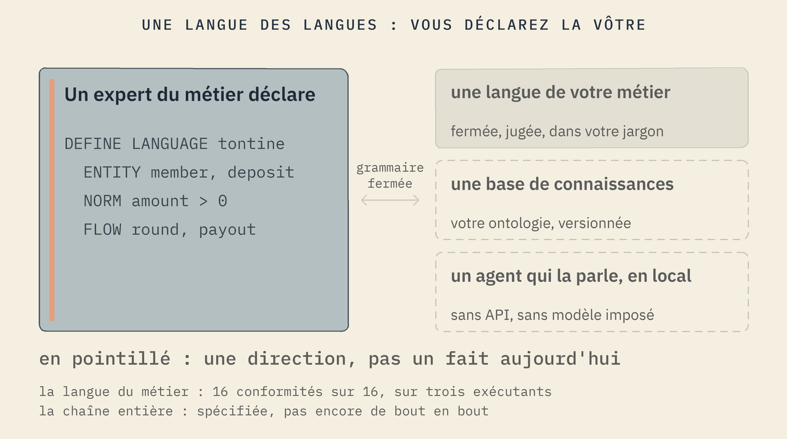
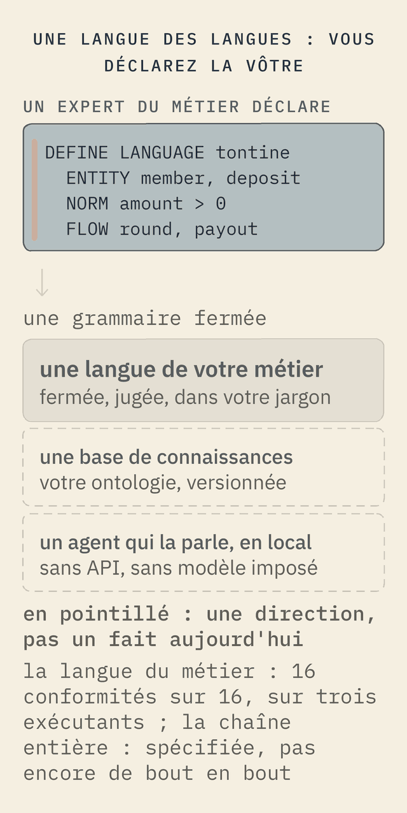

Une langue des langues
L'acte fondateur de Softanza, et sa propre réponse à la programmation à l'ère agentique, est que déclarer une langue est aussi simple que déclarer une variable. Ce n'est pas ainsi que l'on écrit les logiciels aujourd'hui ; c'est la voie que Softanza propose. Un expert du métier écrit, en texte brut, les choses de son monde, les règles entre elles et les flux qui les font bouger. De cette seule déclaration sortent une langue dans son jargon, une base de connaissances de son monde, et un agent qui la parle. Tout cela tourne sur la machine, propulsé par les propres outils de la plateforme : pas d'API, pas de modèle d'IA distant, pas d'abonnement.


À quoi ressemble une déclaration, prise dans la langue machine du domaine lui-même. Soixante-dix-neuf lignes déclarent toute la langue ; le méta-tribunal l'a jugée : sept déclarations, cinq formes, zéro expression.
DEFINE LANGUAGE machine AS ( VERSION "0.1", GRAMMAR "0.1", COURT "declarative/machine/fixtures.json", EXTENSION ".machine" ) ... REFUSAL closed_verbs AS ( MESSAGE "The machine verb set is closed (DEFINE)." )
Et à quoi ressemble le monde d'un expert du métier, pris dans les cas de conformité de la langue de requête : une tontine, déclarée dans ses propres mots.
DEFINE ENTITY deposit (id: uuid, member: text, amount: currency, ...) RATIONALE "One member's contribution to one round of the circle" DEFINE NORM positive_deposit AS ( RULE: amount > 0, MESSAGE: "A deposit must bring something to the circle" )
Trois strates par langue : une syntaxe fermée, une sémantique en base de connaissances, une pragmatique conversationnelle ; la couche naturelle compile vers la propre grammaire de requête fermée de la langue et jamais vers du code hôte, et elle est fondée sur un dictionnaire, ce qui explique qu'elle n'ait besoin d'aucun modèle d'IA. La déclaration de la machine est dans le dépôt Harobanda(s'ouvre dans un nouvel onglet), fichier declarative/machine/machine.stzu. Le dépôt de la discipline de fabrication de langues n'est pas encore public ; son stade, dans ses propres mots : « Phase 1 fermée, phase 1.5 ouverte ; plan et études, pas de code dans ce dépôt encore ». Ce qui tourne aujourd'hui tourne dans la plateforme : le chapitre 12 du cours, « Enseigner un monde », et la couche naturelle montrée sur la page Plateforme.
La manière Softanza Ce n'est pas ainsi que l'on programme aujourd'hui ; c'est la proposition de Softanza pour l'ère agentique : une plateforme qui connaît votre monde, parce que vous l'avez déclaré, dans votre langue, et qu'elle a jugé la déclaration.